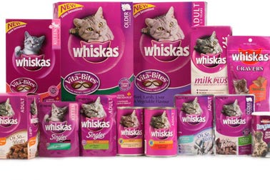
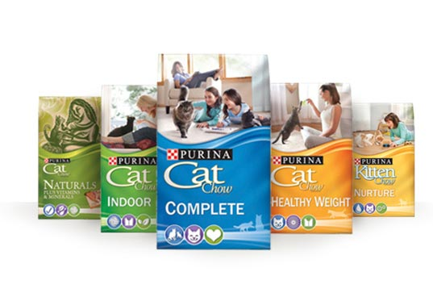
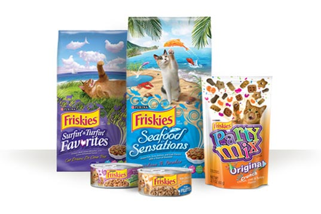
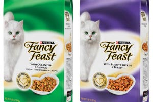
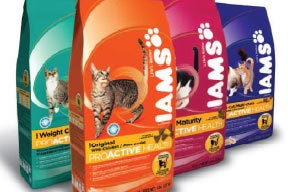
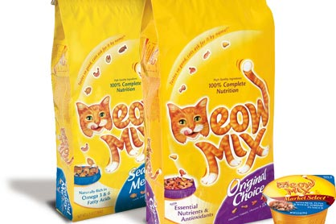
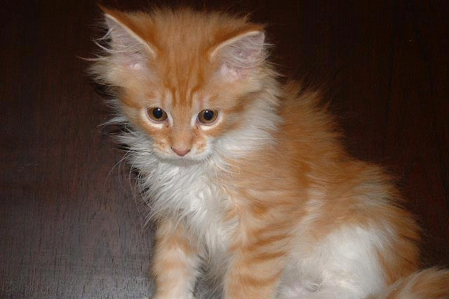
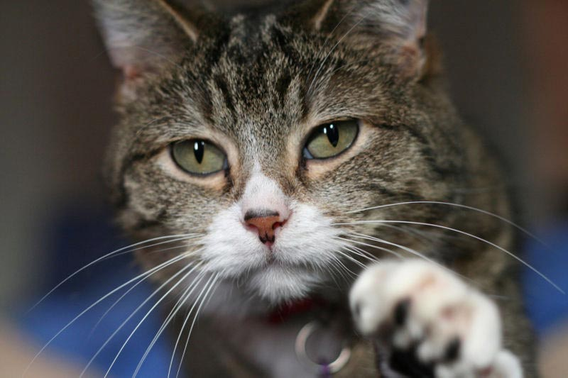

Top 6 Best Cat Food Brands

Whiskas

Purina Cat Chow

Friskies

Fancy Feast

Iams

Meow Mix
Feeding Schedule
The average growing cat should be fed under these categories per day. This includes normal activity, sleeping habits, and behaviour.

Weaning to 6 weeks
- Grams: 28 to 33
- Cups: 1/4 to 1/3
- Times per day: 3 to 4

7 to 6 months
- Grams: 33 to 84
- Cups: 1/3 to 3/4
- Times per day: 3 to 4

7 months to 1 year
- Grams: 56 to 84
- Cups: 1/2 to 3/4
- Times per day: 2